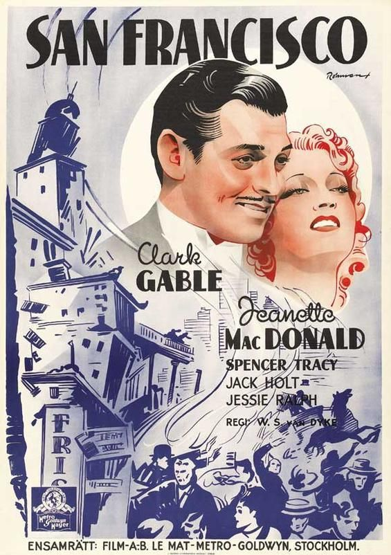
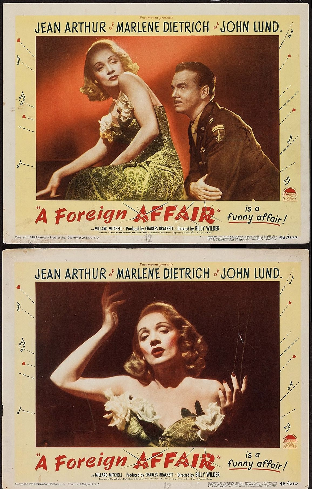
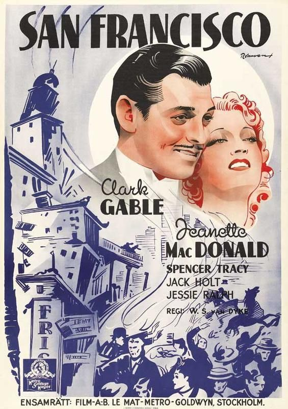
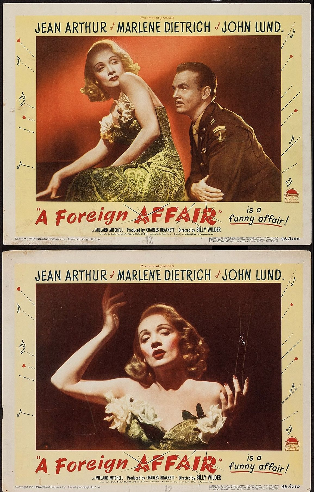
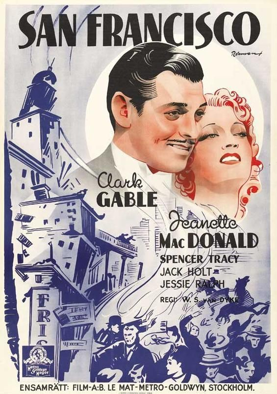
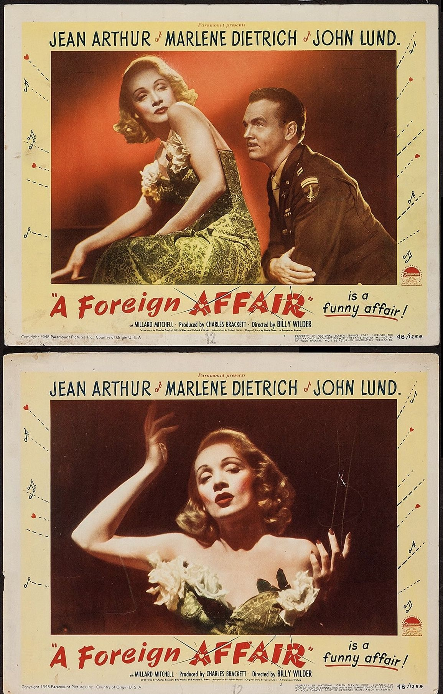
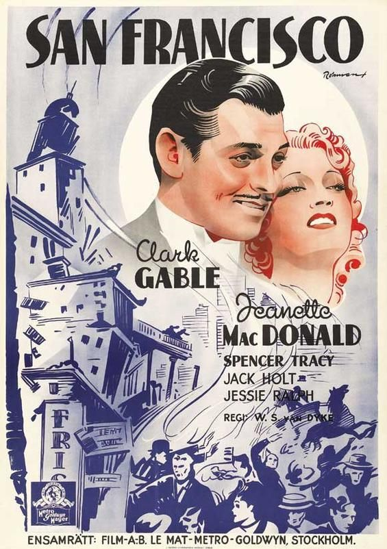
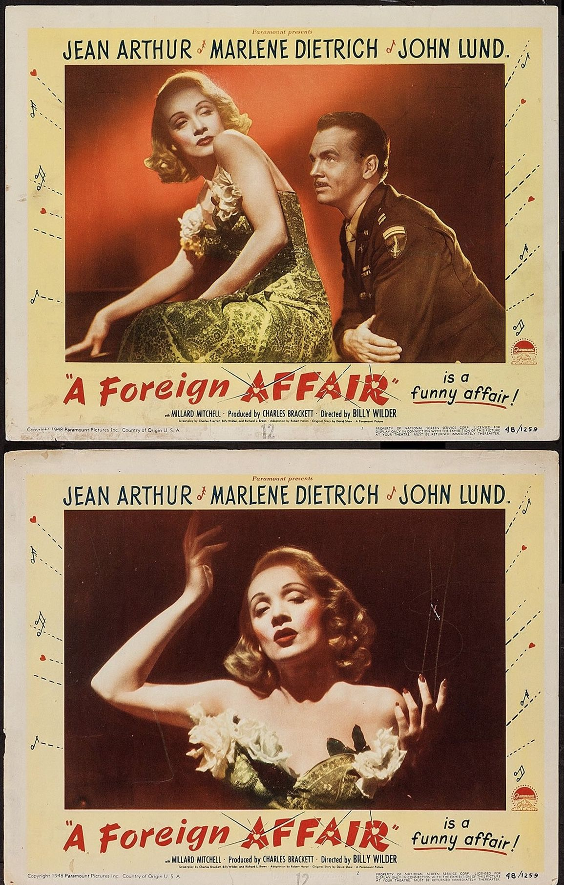
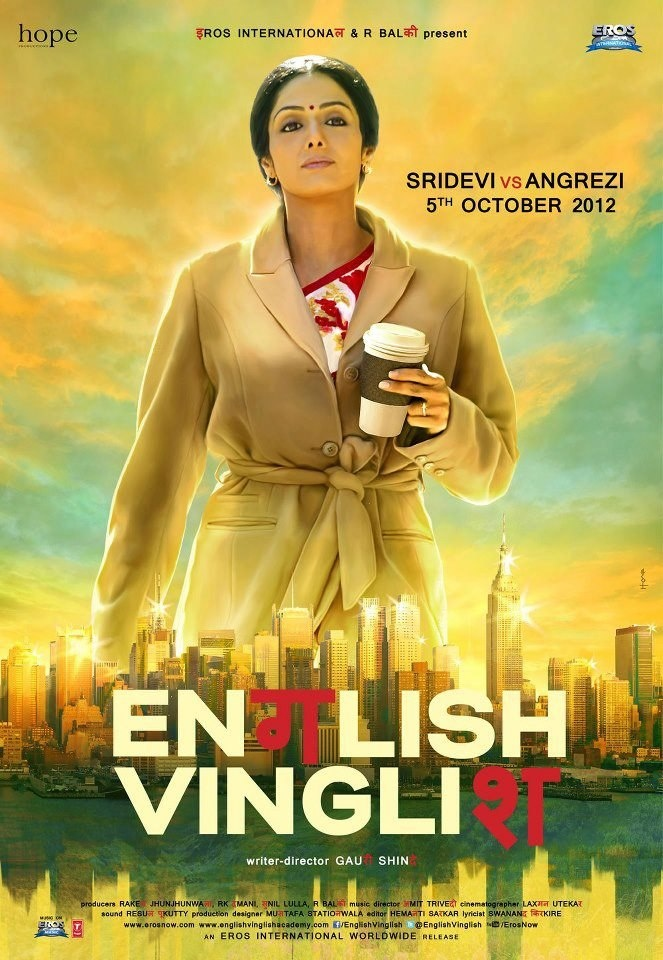
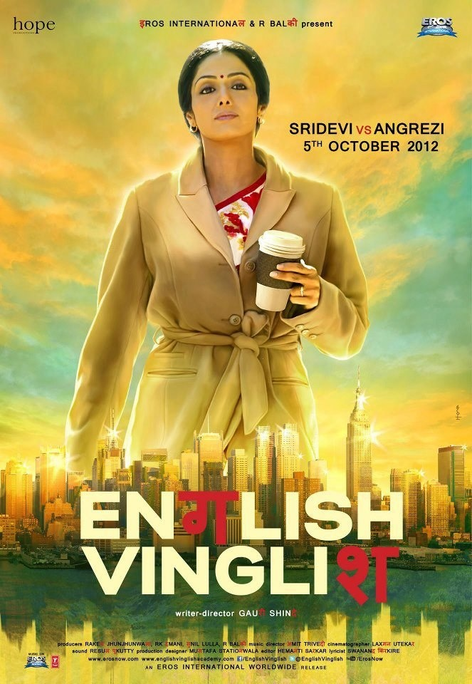

1930 – 1959
 



The Golden Age
Hollywood found its voice. Stars were born, genres formed, and cinema became myth.


A visual archive — how moving images learned to speak, feel, dream, and remember.
Cinema was born without sound — relying on faces, gestures, shadows, and music halls. Emotion lived entirely inside the frame.
Hollywood found its voice. Stars were born, genres formed, and cinema became myth.


Directors broke rules. Stories became personal, political, philosophical — cinema learned to question itself.
Technology expanded imagination. Cinema became global, emotional, and limitless.
 
